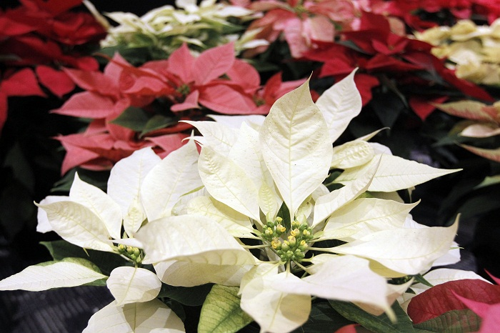

Menu
Joana Liliana Ramirez Morales
VILLA ILUMINADA
Indroduccion
El recorrido del espectáculo iniciará en la Calle Hidalgo, bajando hacia el zócalo de Atlixco, pasa por el callejón Constitución y sigue por la calle 4 norte, frente al exconvento de El Carmen, llegará a calle Nicolás Bravo, después al boulevar Ferrocarriles y finalizará en el Parque Revolución.
El alcalde José Luis Galeazzi Berra, manifestó que esta cuarta edición de Villa Iluminada tendrá una presentación con diseños nuevos en la decoración e iluminación, recalcando que habrá más de 10 eventos culturales y artísticos, con la participación de poco más de 30 grupos provenientes de países como Guatemala, Colombia, España, Perú, Irlanda, Libia, Chile, Kenia e Italia, así como otros nacionales y de la región. “Este evento iniciará el martes 25 de noviembre y concluirá el día 6 de enero; todos estos días vamos a resaltar nuestra cultura y tradiciones, con una especial iluminación y más de 3 mil figuras navideñas relacionadas a la época”, refirió el edil. Informó que en el año 2011, cuando se inició con esta actividad se tuvo una asistencia de 300 mil visitantes y para este año, se espera la llegada entre de 450 a 500 mil visitantes, lo que permitirá tener una derrama económica de 55 o 60 millones de pesos. El recorrido de Villa Iluminada iniciará en la Avenida Hidalgo esquina con la calle 7 sur, atravesará el Zócalo de la ciudad y continuará por la Calle Constitución, pasando por la calle 4 norte, frente al Ex Convento del Carmen, calle Nicolás Bravo, recorrerá el Boulevard Ferrocarriles y finalizará en el Parque Revolución

Joana Liliana Ramirez Morales
INAUGURACION
La noche de este martes, ante miles de familias y un espectáculo de pirotecnia, el alcalde de Atlixco, José Luis Galeazzi Berra, inauguró la Cuarta Edición de la Villa Iluminada, que concluirá el próximo 6 de enero de 2015. En esta ocasión, a través de 3 mil figuras nuevas y durante 43 días, todos los visitantes podrán disfrutar de la belleza arquitectónica de la ciudad de Atlixco, que se embellece con luces coloridas de variantes tonos y escenas alusivas a la época decembrina y la identidad atlixquense. Posterior al encendido, hubo un espectáculo de nieve en la calle Constitución, que miles de pequeños, con sus familias, disfrutaron al máximo. Villa Iluminada espera la llegada de entre 450 a 500 mil visitantes, lo cual permitirá tener una derrama económica de 55 a 60 millones de pesos, pues habrá poco más de 100 eventos culturales y artísticos, con la participación de 30 grupos provenientes de países como Guatemala, Colombia, España, Perú, Irlanda, Libia, Chile, Kenia e Italia, así como de México y la región

VILLA ILUMINADA
COMO NACIO
“Se generó un ambiente de fiesta; este evento le dio otra cara a la ciudad y logra que Atlixco se destaque a nivel estatal, nacional e internacional; además, (con este tipo de acciones) el beneficio es directo a los comerciantes que establecen algún negocio durante estos días y a la población en general porque se reactiva la economía y es una cadena de beneficios”.
Aunado al provecho económico que tuvo este proyecto impulsado por el alcalde Ricardo Camacho Corripio, también ayudó a regenerar el tejido social; además, la comuna —junto con el apoyo del gobierno del estado y otras dependencias— sumaron esfuerzos para redoblar la seguridad en el municipio.
Finalmente, señala que como parte de las actividades que organizó la comuna en estas fechas decembrinas se llevaron a cabo 46 eventos culturales y artísticos que fueron sin costo para propios y extraños.

VILLA ILUMINADA
ACTIVIDADES
La “Villa Iluminada” es un recorrido que resalta la belleza arquitectónica de esta ciudad, embelleciéndola con luz.
Durante más de cuarenta días las calles formarán un circuito de luz y color, vestidas de figuras y escenas alusivas a la navidad, las tradiciones y la identidad de la ciudad.
Los edificios antiguos serán engalanados con luces, lo que destacará su bella arquitectura y valor histórico.
Además, no te pierdas actividades:
- Artísticas
- Culturales
- Deportivas
- Stands de Flores
- Artesanías
- Artículos navideños y de temporada
- Gastronomía típica

VILLA ILUMINADA
TURISTAS
Durante los 45 días del evento se registró una afluencia superior a 400 mil personas
Durante los 45 días que duró el evento denominado Villa Iluminada, que por tercera ocasión organiza el ayuntamiento —a cargo del alcalde Ricardo Camacho Corripio—, se registró una afluencia que rebasó las 400 mil personas y generó una derrama económica mayor a los 50 millones de pesos, dio a conocer la comuna.
A través de un comunicado, el ayuntamiento de Atlixco destacó que el proyecto Villa Iluminada generó también más de mil empleos, se establecieron 162 negocios fijos durante el trayecto y/o recorrido del espectáculo de iluminación por las principales calles de la ciudad, lo que derivó en una importante derrama económica —de manera directa e indirecta— para miles de familias.
Resaltó que durante la temporada decembrina y festejos de Día de Reyes, que culminaron el pasado 6 de enero con un magno desfile, Villa Iluminada contribuyó a posicionar a Atlixco como uno de los destinos turísticos más importantes en la entidad poblana, pues formó parte de los muchos atractivos con los que cuenta el municipio.

VILLA ILUMINADA
FERIA DE LA NOCHE BUENA
A partir del 25 de noviembre los mejores productores de la región exponen y venden una variedad enorme de plantas de Nochebuena a precios competitivos en mayoreo y menudeo concentrados en el Recinto Ferial de Atlixco.El municipio de Atlixco dio a conocer los detalles de su próxima “Feria de la Noche Buena 2014”, la cual se llevará a cabo del 28 de noviembre al 7 de diciembre donde se podrá encontrar más de 27 variedades de esta planta decembrina.
La meta es vender un total de 150 mil nochebuenas, con precios que van de 15 a 150 pesos.

FERIA DE LA NOCHE BUENA
VARIEDAD DE NOCHE BUENA
Durante este periodo los visitantes podrán encontrar 27 variedades de flor decembrina, de los cuales 7 son tonalidades distintas de color rojo y más de 10 diversos colores entre ellos, rosa, salmón, blanco, amarillo y más.
Para esta feria que se encuentra dentro de la Villa Iluminada Atlixco 2014, se estima una derrama económica de 4 millones de pesos y una afluencia de 500 mil visitantes.

FERIA DE LA NOCHE BUENA